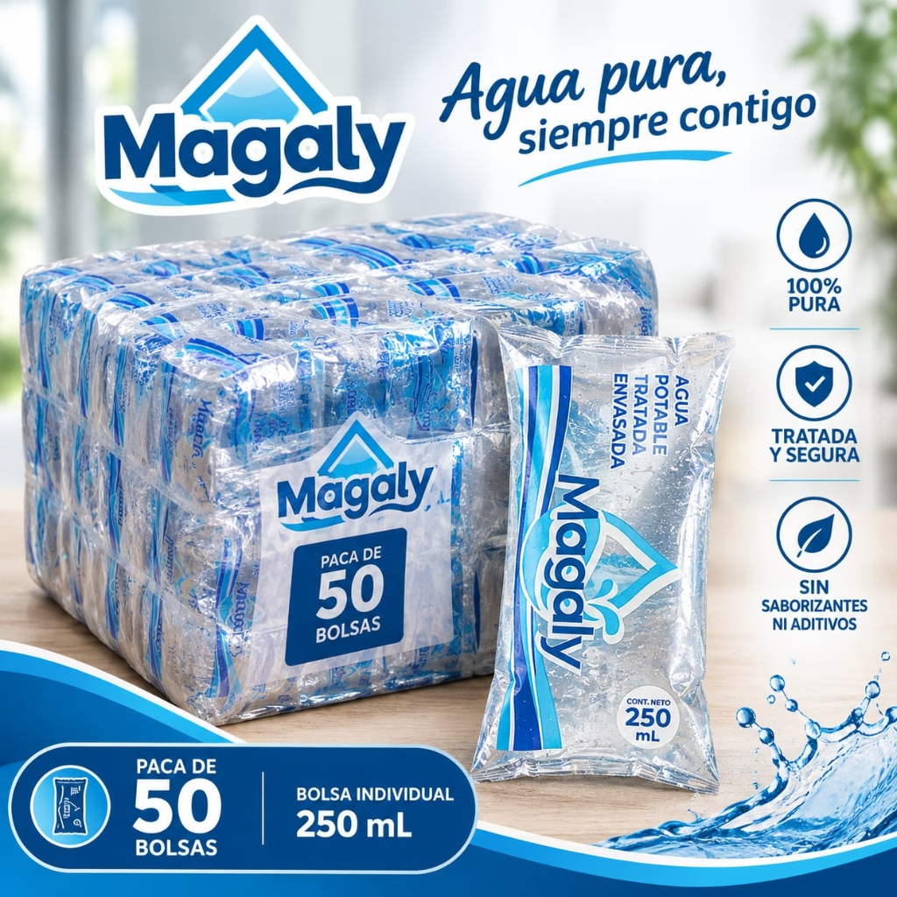
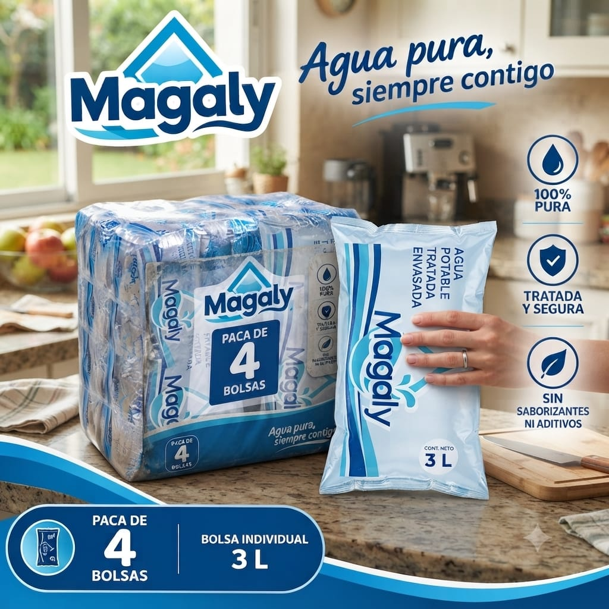

La primera microempresa de agua envasada del corregimiento. Extraída de pozo profundo propio de 60 metros, certificada sanitariamente por el INVIMA y lista para pedir a domicilio.

Durante más de dos décadas, el corregimiento de Bajo Grande (Sahagún, Córdoba) ha enfrentado la falta de agua potable continua. Las familias y comerciantes debían pagar fletes excesivos para traer agua de municipios vecinos, exponiéndose a desabastecimientos y riesgos sanitarios.
Agua Magaly nació como una solución endógena y comunitaria: instalamos tecnología de purificación y envasado en la misma vereda, ofreciendo agua con control sanitario oficial y a un precio justo para nuestra gente.
Agua Magaly es un emprendimiento rural de impacto social y económico constituido en el corregimiento de Bajo Grande, municipio de Sahagún (Córdoba).
Contamos con un pozo profundo de 60 metros de extracción con abundante caudal y sistema de filtración industrial multietapa. Envasamos cumpliendo estrictamente con la normatividad sanitaria colombiana, generando empleo local y digno para las familias de la zona.
Elige la cantidad de pacas que necesitas. Ambas presentaciones se venden por pacas completas a precios justos directos de fábrica ($4.000 la paca).

* Al presionar "Pedir por WhatsApp", se enviará automáticamente el detalle de tu compra junto con tus datos de entrega para que Agua Magaly confirme la ruta y coordine el despacho.
Usa los botones + y – en la sección de productos para sumar las pacas de 250 ml o bolsas de 3L que necesites.
Toca el botón "Pedir por WhatsApp". Se generará un mensaje automático con el detalle exacto de tu compra.
Coordinamos la entrega inmediata en tu vivienda o tienda, o puedes recogerlo en nuestra planta de purificación.
Agua Magaly no es solo un negocio: es una iniciativa de desarrollo endógeno que empodera a la comunidad rural.
Acceso continuo a agua 100% potable, segura y asequible sin depender del clima ni de carrotanques lejanos.
Margen de ganancia atractivo para la reventa en abastos y pulperías locales, dinamizando la economía veredal.
Generación de empleo en Bajo Grande y reinversión constante para ampliar la capacidad de bombeo y purificación.
Agua purificada, tratada y envasada con protocolos de inocuidad y control bacteriológico verificado.
Empresa registrada y formalmente constituida en Colombia, respaldando a todos nuestros clientes.
Registro mercantil activo que valida nuestra trayectoria y compromiso de crecimiento en Sahagún.
Queremos brindarte el mejor servicio. Envía tus comentarios, inquietudes sobre entregas o sugerencias directamente a nuestro canal de WhatsApp.